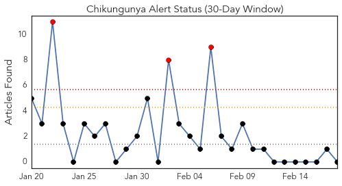
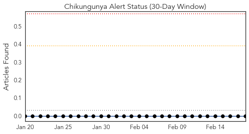
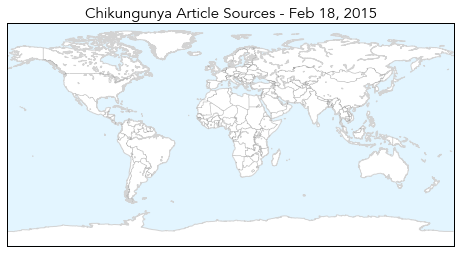
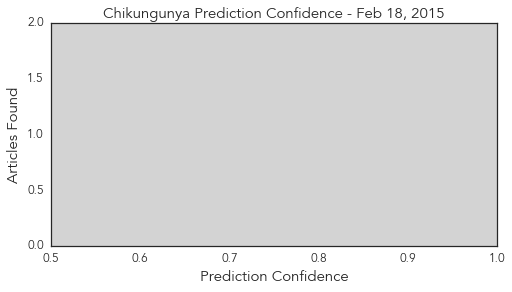
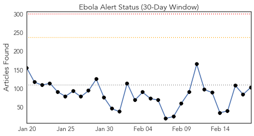
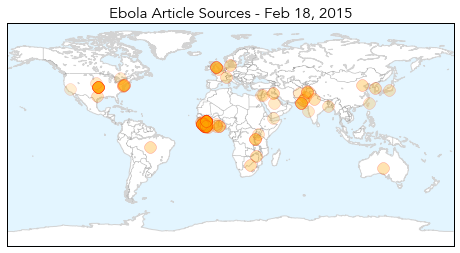
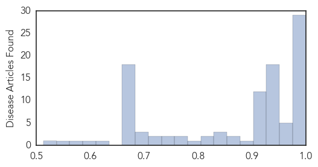

Chikungunya
30-Day Web Trend
3 alerts, 0 warnings

30-Day Twitter Trend
0 alerts, 0 warnings

Article Locations
Article Confidences
Top Articles:
-
No articles found for Feb 18, 2015
Top Tweets:
-
No tweets found for Feb 18, 2015
Ebola
30-Day Web Trend
0 alerts, 0 warnings

30-Day Twitter Trend
8 alerts, 2 warnings

Article Locations
Article Confidences
Top Articles:
- 1.000
- SLeone hunts infected as Ebola crisis hits 'turning point'
- 1.000
- SLeone hunts infected as Ebola crisis hits 'turning point' - Sierra Leone
- 1.000
- SLeone hunts infected as Ebola crisis hits 'turning point'
- 0.999
- SLeone hunts infected as Ebola crisis hits 'turning point'
- 0.999
- Russia May Start Testing 3 Ebola Vaccines on Primates in March – Ministry
- 0.999
- Liberia says six cases of Ebola remains nationwide --China Economic Net
- 0.998
- Ebola cases fall in West Africa, but challenges remain - WHO
- 0.996
- Sierra Leone health workers go door-to-door in search of Ebola patients
- 0.996
- Rapid Detection and Response Are Essential to Stopping Ebola
- 0.996
- Ebola outbreak declines letting schools to reopen in Liberia
- 0.995
- United Nations cautions against complacency in Ebola progress
- 0.994
- "The Pattern of the Ebola Outbreak Has Changed"
- 0.994
- Attacks on health workers hamper Ebola fight
- 0.993
- Schools In Liberia Finally Reopen Following 6 Month Closure Due To Ebola
- 0.992
- First results from Ebola vaccine trial show acceptable safety profile
- 0.991
- Guinea: Reopening schools safely - partnering with families and communities
- 0.990
- Threat of Deadly Pathogens on the Rise Thanks to Climate Change
- 0.989
- Senegalese Ebola Corridor Delegation Interacts Health Minister
- 0.989
- UN development chief begins last leg of West Africa mission
- 0.989
- Senegalese Ebola Corridor Delegation Interacts Health Minister
- 0.986
- Gov’t explains 60 days zero Ebola plan
- 0.985
- UN to issue first report on Ebola funds
- 0.982
- UN development chief begins last leg of West Africa Ebola mission
- 0.980
- One paragraph that explains why we haven't yet found an Ebola cure
- 0.980
- Governor appoints MSP superintendent
- 0.980
- Teen killed in Essex shootout had 6 weapons
- 0.979
- Researchers volunteer to fight Ebola
- 0.978
- US Ambassador John Hoover raps press on Ebola Prevention Vaccine for Sierra Leone
- 0.977
- MSF Month in Focus: February 2015
- 0.968
- WHH empowers Banana Island, Sierra Leone to resist Ebola
- 0.968
- Sierra Leone launches house to house search to stop spike in Ebola cases
- 0.968
- Diagnosing Ebola in Sierra Leone
- 0.966
- KCCR awaits WHO certification
- 0.952
- My journey on the tortuous Ebola trail
- 0.951
- President Koroma Hosts UNDP Administrator
- 0.951
- Health Ministry Receives More Items for Ebola Fight
- 0.951
- Mambu Challenges 'Credibility' of Auditor Report
- 0.951
- WHO Mutilated Allison's Body? Eyewitness
- 0.951
- Liberia: U.S. Congressional Staffers' Delegation Calls On Ellen
- 0.951
- Missing Ebola Funds – Anti-Corruption steps in
- 0.951
- Sierra Leone, Belgium Envoys Present Credentials
- 0.951
- Taylor-Era Wartime Timber Company Penalized, Accused of PUP Breach
- 0.951
- Civil Society Meet On Trial Vaccines
- 0.951
- Don't Elect Childish Leadership
- 0.951
- Why China's Leaders See Corruption as a Mortal Threat
- 0.951
- Uzbek Rights Activists Prevented From Leaving For Seoul To Get Award
- 0.951
- BJP dubs Mamata's reshuffling exercise as serving lollipops
- 0.943
- Sierra Leone launches house to house search to stop spike in Ebola cases
- 0.941
- Sierra Leone: Sierra Leone goes door-to-door to fight Ebola
- 0.938
- Youngstown News, Success in fight against Ebola
Showing top 50 articles...
Top Tweets:
- 0.994
- Paper Test Quickly Detects Ebola, Dengue, And Yellow Fever - Scientific American http://t.co/3KxH69Objk ebola EVD
- 0.966
- Attacks on health workers hamper Ebola fight - Deutsche Welle http://t.co/crHQt1bJdu ebola EVD
- 0.958
- RITE (Rapid Isolation and Treatment of Ebola) teams fighting the epidemic in Liberia. Read more http://t.co/Qq9zABRQyU
- 0.947
- RT: RITE (Rapid Isolation and Treatment of Ebola) teams fighting the epidemic in Liberia. Read more http://t.co/Qq9zABRQyU
- 0.947
- RT: RITE (Rapid Isolation and Treatment of Ebola) teams fighting the epidemic in Liberia. Read more http://t.co/Qq9zABRQyU
- 0.916
- RT: .@SavetheChildren has distributed Ebola prevention kits to 783 schools & provided 532 schools w/ Ebola safety training in …
- 0.905
- RT: Latest map of Ebola outbreak in WestAfrica with stats for Liberia, Guinea & Sierra Leone http://t.co/sz6s7vNAJS
- 0.905
- Ebola survivor says virus difficult to stamp out - The Detroit News http://t.co/wY1RXhjmHl ebola EVD
- 0.905
- Ebola survivor says virus difficult to stamp out - The Detroit News http://t.co/dy7ZlN15nx ebola EVD
- 0.905
- Ebola survivor says virus difficult to stamp out - The Detroit News http://t.co/SU9cgkONbU ebola EVD
- 0.905
- Ebola survivor says virus difficult to stamp out - The Detroit News http://t.co/R0YjO0x4Oa ebola EVD
- 0.905
- Ebola survivor says virus difficult to stamp out - The Detroit News http://t.co/8JIJ9D2fk8 ebola EVD
- 0.905
- Ebola survivor says virus difficult to stamp out - The Detroit News http://t.co/0cKlm3xloA ebola EVD
- 0.896
- RT: 22% of patients Hosp in SL between 2011&2014 had anti-Ebola virus (EBOV) IgG or IgM, suggesting prior exposure 2 Eb…
- 0.882
- Ebola outbreak – after the quarantine http://t.co/rJWLd24Akd
- 0.843
- News pouch on avianflu avianinfluenza Ebola EbolaResponse MERS http://t.co/lQF3a2RyV8
- 0.838
- Hopkins helps make training videos on Ebola and infectious disease care - Baltimore Sun http://t.co/Cg3ygTYYV0 ebola EVD
- 0.833
- Liberia's Children Go Back to School but Ebola Is Not Over Yet - TIME http://t.co/GZ39IIuusC ebola EVD
- 0.833
- Liberia's Children Go Back To School But Ebola Is Not Over Yet - TIME http://t.co/xlZhQdEMsc ebola EVD
- 0.819
- BREAKING NEWS: Eastbourne person being tested for Ebola - Eastbourne Herald http://t.co/E24dIFD9Wh ebola EVD
- 0.803
- Across 3 worst affected countries, total of confirmed Ebola cases per wk has significantly declined since 1 Jan. EbolaResponse
- 0.793
- RT: Ebola virus must be celebrating over what's happening in SierraLeone - attention shifting from fighting virus to fightin…
- 0.752
- RT: UNSG appelle UNGA à ne pas relâcher la vigilance contre Ebola EbolaResponse
- 0.752
- Clinicaltrials of Ebola vaccine must continue despite fall in number of cases http://t.co/4HJyzL8MRj
- 0.742
- RT: UNSG: Avec une action vigoureuse et efficace, nous pouvons juguler l’épidémie d’Ebola EbolaResponse
- 0.695
- SierraLeone Ebola Survivors Help Train Health Care Workers http://t.co/FiXqjaT7iF
- 0.675
- Today marks 1 month since Mali was declared free of Ebola Virus Disease, but EbolaResponse continues https://t.co/MlD6BPeEC8
- 0.628
- One paragraph that explains why we haven't yet found an Ebola cure - Vox http://t.co/K0XXbZqnYH ebola EVD
- 0.626
- RT: Sierra Leone Ebola Survivors Help Train Healthcare Workers http://t.co/oB4NQOASBp
- 0.592
- RT: The EU has pledged over €1.2bn to fight Ebola. Next: Ebola Conference in Brussels 3/3. http://t.co/0c7PykfR8A E…
- 0.574
- ElbowOutEbola News: Sierra Leone investigates alleged misuse of emergency Ebola Funds -... http://t.co/YtlDmPuG75
- 0.559
- ElbowOutEbola News: Edinburgh patient tests negative for Ebola - http://t.co/1MmpBCR0iL
- 0.552
- We can help: Military medical unit from Md. packing up 4 mobile Ebola testing labs in Liberia http://t.co/8eydEwGB6n
- 0.552
- We can help! @WNEW: Military medical unit from Md. packing up 4 mobile Ebola testing labs in Liberia http://t.co/8eydEwGB6n
- 0.547
- Wewish to help! @WNEW: Military medical unit from Md. packing up 4 mobile Ebola testing labs in Liberia http://t.co/8eydEwGB6n
- 0.545
- Help! @WNEW: Military medical unit from Md. packing up 4 mobile Ebola testing labs in Liberia http://t.co/8eydEwGB6n
- 0.545
- Help! @WNEW: Military medical unit from Md. packing up 4 mobile Ebola testing labs in Liberia http://t.co/8eydEwGB6n
- 0.545
- Help! @WNEW: Military medical unit from Md. packing up 4 mobile Ebola testing labs in Liberia http://t.co/8eydEwGB6n
- 0.543
- : Military medical unit from Md. packing up 4 mobile Ebola testing labs in Liberia http://t.co/8eydEwGB6n
- 0.543
- : Military medical unit from Md. packing up 4 mobile Ebola testing labs in Liberia http://t.co/8eydEwGB6n
- 0.543
- : Military medical unit from Md. packing up 4 mobile Ebola testing labs in Liberia http://t.co/8eydEwGB6n
- 0.543
- : Military medical unit from Md. packing up 4 mobile Ebola testing labs in Liberia - http://t.co/8eydEwGB6n
- 0.543
- Can we help? @WNEW: Military medical unit from Md. packing up 4 mobile Ebola testing labs in Liberia http://t.co/8eydEwGB6n
- 0.543
- C'est Parti! WNEW: Military medical unit from Md. packing up 4 mobile Ebola testing labs in Liberia http://t.co/8eydEwGB6n
- 0.538
- : Military medical unit from Md. packing up 4 mobile Ebola testing labs in Liberiahttp://t.co/NmyeOKWtwx
- 0.530
- After Ebola: What next for West Africas health systems? https://t.co/AZQ0yH68OM any plans for the Remote areas?
- 0.528
- We?@WNEW: Military medical unit from Md. packing up 4 mobile Ebola testing labs in Liberia http://t.co/8eydEwGB6n
- 0.527
- What now?help! @WNEW: Military medical unit from Md. packing up 4 mobile Ebola testing labs in Liberia http://t.co/8eydEwGB6n
- 0.525
- What now? @WNEW: Military medical unit from Md. packing up 4 mobile Ebola testing labs in Liberia http://t.co/8eydEwGB6n
- 0.525
- Now what?! @WNEW: Military medical unit from Md. packing up 4 mobile Ebola testing labs in Liberia http://t.co/8eydEwGB6n
Showing top 50 tweets...